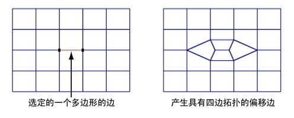
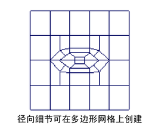

添加穿过网格指定部分的循环边
创建偏移部分循环边
- 在场景视图中，选择多边形网格。
- 从“建模”(Modeling)菜单集中，选择“网格工具 > 偏移循环边”(Mesh Tools > Offset Edge Loop) >
 。
。 此时将出现“偏移循环边工具”(Offset Edge Loop Tool)窗口。
- 设定以下选项，然后单击“进入工具并关闭”(Enter Tool and Close)。
- 工具完成(Tool Completion)：按 Enter 键(Press Enter)
- 删除边(Delete Edge)：启用
- 单击多边形网格中希望新循环边从其偏移的边。
一对循环边预览定位线将显示在所单击边的两侧，并且与该边平行。绿色虚线预览定位器指示释放鼠标按钮后新循环边将插入到网格中的哪个位置。
- 沿网格的同一循环边继续单击边，以生成网格中选定边的所需部分循环。
“偏移循环边工具”(Offset Edge Loop Tool)可以选择介于您选择的第一条和最后一条边之间的任何边，并在您继续操作时更新循环边预览定位器。
提示： 您不必沿路径单击每条边。单击一次以指定第一条边，然后沿着网格的同一轮廓线单击第二次以指示路径的末端。 - 如果要取消选择特定边，请按 Ctrl 键并单击该边，然后继续选择。如果要彻底取消选择，请单击网格的场景视图中的任意位置。
- 通过来回拖动鼠标放置循环边预览定位器。
- 完成选择后，按 Enter 键或单击鼠标右键并从标记菜单中年选择“完成工具”(Complete Tool)。
新的循环边将插入到与选定的原始循环边关联的多边形面中。原始部分循环边将一直保持选中状态，以便您可以对其执行其他操作。
 - 完成所需的多边形分割后，请执行以下操作之一来退出工具：
- 选择“工具箱”(Toolbox)中的“选择工具”(Select Tool)（热键：Q）。
- 选择其他工具或功能，以便对选定循环边执行下一个操作。
例如，选择“移动工具”(Move Tool)来移动选定的循环边，选择编辑网格 > 挤出(Edit Mesh > Extrude)来挤出选定的循环边，或将循环边选择转化为面。
根据边选择的范围，“偏移循环边工具”(Offset Edge Loop Tool)将根据启用“删除边”(Delete Edge)选项时“偏移循环边工具”(Offset Edge Loop Tool)保持四边多边形的方式，采用比原始网格更径向的方式插入边。该径向细节对于在角色模型上创建眼睛、耳朵、或嘴等特征非常有用。
